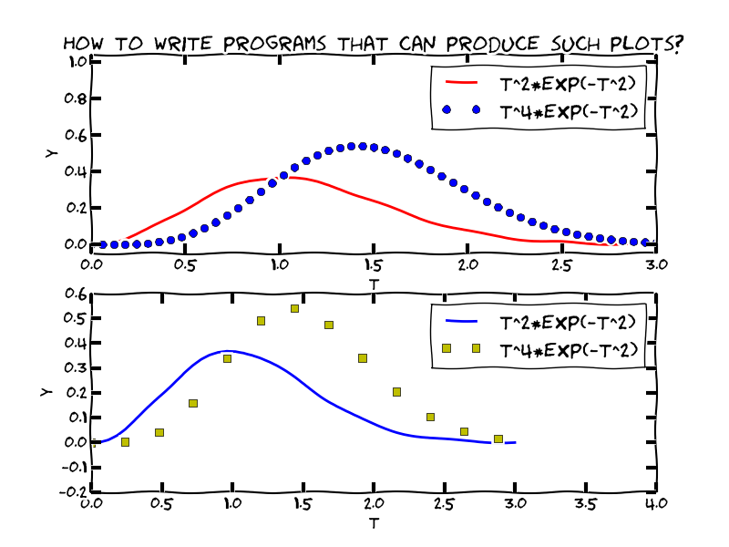
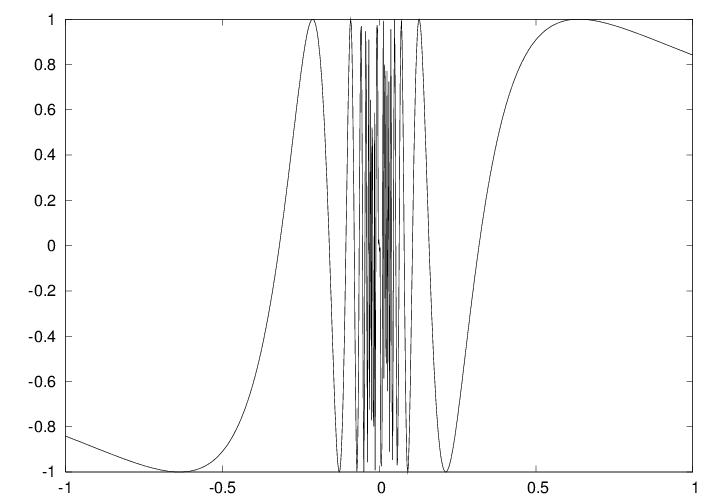

x and yy coordinates (in an array) we need to learn about array computations or vectorization
v[i],
Vectors and arrays are key concepts in this chapter. It takes separate math courses to understand what vectors and arrays really are, but in this course we only need a small subset of the complete story. A learning strategy may be to just start using vectors/arrays in programs and later, if necessary, go back to the more mathematical details in the first part of Ch. 5.
Arrays are a generalization of vectors where we can have multiple indices: \( A_{i,j} \), \( A_{i,j,k} \)
Example: table of numbers, one index for the row, one for the column $$ \left\lbrack\begin{array}{cccc} 0 & 12 & -1 & 5\\ -1 & -1 & -1 & 0\\ 11 & 5 & 5 & -2 \end{array}\right\rbrack \hspace{1cm} A = \left\lbrack\begin{array}{ccc} A_{0,0} & \cdots & A_{0,n-1}\\ \vdots & \ddots & \vdots\\ A_{m-1,0} & \cdots & A_{m-1,n-1} \end{array}\right\rbrack $$
>>> def f(x):
... return x**3
...
>>> n = 5 # no of points
>>> dx = 1.0/(n-1) # x spacing in [0,1]
>>> xlist = [i*dx for i in range(n)]
>>> ylist = [f(x) for x in xlist]
>>> pairs = [[x, y] for x, y in zip(xlist, ylist)]
>>> import numpy as np # module for arrays
>>> x = np.array(xlist) # turn list xlist into array
>>> y = np.array(ylist)
>>> n = 5 # number of points
>>> x = np.linspace(0, 1, n) # n points in [0, 1]
>>> y = np.zeros(n) # n zeros (float data type)
>>> for i in xrange(n):
... y[i] = f(x[i])
...
Note:
xrange is like range but faster
(esp. for large n - xrange does not explicitly build
a list of integers, xrange just lets you loop over the values)numpy (np) functions
float, int, or complex
Compute the sine of an array:
from math import sin
for i in xrange(len(x)):
y[i] = sin(x[i])
However, if x is array, y can be computed by
y = np.sin(x) # x: array, y: array
The loop is now inside np.sin and implemented in very efficient C code.
%timeit in IPython to measure the speed-up for \( y=\sin x e^{-x} \):
In [1]: n = 100000
In [2]: import numpy as np
In [3]: x = np.linspace(0, 2*np.pi, n+1)
In [4]: y = np.zeros(len(x))
In [5]: %timeit for i in xrange(len(x)): \
y[i] = np.sin(x[i])*np.exp(-x[i])
1 loops, best of 3: 247 ms per loop
In [6]: %timeit y = np.sin(x)*np.exp(-x)
100 loops, best of 3: 4.77 ms per loop
In [7]: 247/4.77
Out[7]: 51.781970649895186 # vectorization: 50x speed-up!
f(x) written for a number x usually works for array x too
from numpy import sin, exp, linspace
def f(x):
return x**3 + sin(x)*exp(-3*x)
x = 1.2 # float object
y = f(x) # y is float
x = linspace(0, 3, 10001) # 10000 intervals in [0,3]
y = f(x) # y is array
math is for numbers and numpy for arrays.
>>> import math, numpy
>>> x = numpy.linspace(0, 1, 11)
>>> math.sin(x[3])
0.2955202066613396
>>> math.sin(x)
...
TypeError: only length-1 arrays can be converted to Python scalars
>>> numpy.sin(x)
array([ 0. , 0.09983, 0.19866, 0.29552, 0.38941,
0.47942, 0.56464, 0.64421, 0.71735, 0.78332,
0.84147])
y = f(x), where f returns x**3 + sin(x)*exp(-3*x)f(x) leads to the following set of vectorized sub-computations:r1 = x**3 for i in range(len(x)): r1[i] = x[i]**3 r2 = sin(x) (computed elementwise in C)r3 = -3*xr4 = exp(r3)r5 = r3*r4r6 = r1 + r5y = r6x is a number
from numpy import *
n = 100
x = linspace(0, 4*pi, n+1)
y = 2.5 + x**2*exp(-0.5*x)*sin(x-pi/3)
if tests automatically work for both scalar and vector (array) arguments (i.e., no vectorization is needed by the programmer)
from scitools.std import * # import numpy and plotting
# Make points along the curve
t = linspace(0, 3, 51) # 50 intervals in [0, 3]
y = t**2*exp(-t**2) # vectorized expression
plot(t, y) # make plot on the screen
savefig('fig.pdf') # make PDF image for reports
savefig('fig.png') # make PNG image for web pages

from scitools.std import * # import numpy and plotting
def f(t):
return t**2*exp(-t**2)
t = linspace(0, 3, 51) # t coordinates
y = f(t) # corresponding y values
plot(t, y)
xlabel('t') # label on the x axis
ylabel('y') # label on the y axix
legend('t^2*exp(-t^2)') # mark the curve
axis([0, 3, -0.05, 0.6]) # [tmin, tmax, ymin, ymax]
title('My First Easyviz Demo')
scitools.easyviz) doing plotting with Matlab-like syntax
from scitools.std import *
# is basically equivalent to
from numpy import *
from matplotlib.pyplot import *
Note: SciTools (by default) adds markers to the lines, Matplotlib does not
scitools.std) allows a more compact "Pythonic" syntax for plotting curves
Use keyword arguments instead of separate function calls:
plot(t, y,
xlabel='t',
ylabel='y',
legend='t^2*exp(-t^2)',
axis=[0, 3, -0.05, 0.6],
title='My First Easyviz Demo',
savefig='tmp1.png',
show=True) # display on the screen (default)
(This cannot be done with Matplotlib.)
from scitools.std import * # curve plotting + array computing
def f1(t):
return t**2*exp(-t**2)
def f2(t):
return t**2*f1(t)
t = linspace(0, 3, 51)
y1 = f1(t)
y2 = f2(t)
plot(t, y1)
hold('on') # continue plotting in the same plot
plot(t, y2)
xlabel('t')
ylabel('y')
legend('t^2*exp(-t^2)', 't^4*exp(-t^2)')
title('Plotting two curves in the same plot')
savefig('tmp2.png')
plot(t, y1, t, y2,
xlabel='t', ylabel='y',
legend=('t^2*exp(-t^2)', 't^4*exp(-t^2)'),
title='Plotting two curves in the same plot',
savefig='tmp2.pdf')
# equivalent to
plot(t, y1)
hold('on')
plot(t, y2)
xlabel('t')
ylabel('y')
legend('t^2*exp(-t^2)', 't^4*exp(-t^2)')
title('Plotting two curves in the same plot')
savefig('tmp2.pdf')

When plotting multiple curves in the same plot, the different lines (normally) look different. We can control the line type and color, if desired:
plot(t, y1, 'r-') # red (r) line (-)
hold('on')
plot(t, y2, 'bo') # blue (b) circles (o)
# or
plot(t, y1, 'r-', t, y2, 'bo')
Documentation of colors and line styles: see the book, Ch. 5, or
Unix> pydoc scitools.easyviz
t = linspace(0, 3, 51)
plot(t, t**2*exp(-t**2), t, t**4*exp(-t**2))
Terminal> python plotf.py expression xmin xmax
Terminal> python plotf.py "exp(-0.2*x)*sin(2*pi*x)" 0 4*pi
Should plot \( e^{-0.2x}\sin (2\pi x) \), \( x\in [0,4\pi] \).
plotf.py should work for "any" mathematical expression.
from scitools.std import *
# or alternatively
from numpy import *
from matplotlib.pyplot import *
formula = sys.argv[1]
xmin = eval(sys.argv[2])
xmax = eval(sys.argv[3])
x = linspace(xmin, xmax, 101)
y = eval(formula)
plot(x, y, title=formula)

$$ f(x; m, s) = {1\over\sqrt{2\pi}}{1\over s}\exp{\left[-{1\over2}\left({x-m\over s}\right)^2\right]} $$
plot for each \( s \) and make hardcopy, combine all hardcopies to a movie
from scitools.std import *
import time
def f(x, m, s):
return (1.0/(sqrt(2*pi)*s))*exp(-0.5*((x-m)/s)**2)
m = 0; s_start = 2; s_stop = 0.2
s_values = linspace(s_start, s_stop, 30)
x = linspace(m -3*s_start, m + 3*s_start, 1000)
# f is max for x=m (smaller s gives larger max value)
max_f = f(m, m, s_stop)
# Show the movie on the screen
# and make hardcopies of frames simultaneously
import time
frame_counter = 0
for s in s_values:
y = f(x, m, s)
plot(x, y, axis=[x[0], x[-1], -0.1, max_f],
xlabel='x', ylabel='f', legend='s=%4.2f' % s,
savefig='tmp_%04d.png' % frame_counter)
frame_counter += 1
#time.sleep(0.2) # pause to control movie speed
We now have a lot of files:
tmp_0000.png tmp_0001.png tmp_0002.png ...
We use some program to combine these files to a video file:
convert for animted GIF format (if just a few plot files)ffmpeg (or avconv) for MP4, WebM, Ogg, and Flash formats
Tool: convert from the ImageMagick software suite.
Unix command:
Terminal> convert -delay 50 tmp_*.png movie.gif
Delay: 50/100 s, i.e., 0.5 s between each frame.
Play animated GIF file with animate from ImageMagick:
Terminal> animate movie.gif
or insert this HTML code in some file tmp.html loaded into a browser:
<img src="movie.gif">
Tool: ffmpeg or avconv
Terminal> ffmpeg -r 5 -i tmp_%04d.png -vcodec flv movie.flv
where
-r 5 specifies 5 frames per second-i tmp_%04d.png specifies filenames tmp_0000.png, tmp_0001.png, ...)-vcodec) and
video filenamet extensions:
| Format | Codec and filename |
|---|---|
| Flash | -vcodec flv movie.flv |
| MP4 | -vcodec libx264 movie.mp4 |
| Webm | -vcodec libvpx movie.webm |
| Ogg | -vcodec libtheora movie.ogg |
Terminal> vlc movie.flv
Terminal> vlc movie.ogg
Terminal> vlc movie.webm
Terminal> vlc movie.mp4
Other players (on Linux) are mplayer, totem, ...
Terminal> scitools movie output_file=mymovie.html fps=4 tmp_*.png
makes a player of tmp_*.png files in a file mymovie.html
(load into a web browser)
scitools.aplotter can then be used for drawing primitive curves in pure text (ASCII) format
>>> from scitools.aplotter import plot
>>> from numpy import linspace, exp, cos, pi
>>> x = linspace(-2, 2, 81)
>>> y = exp(-0.5*x**2)*cos(pi*x)
>>> plot(x, y)
Try these statements out!
The Heaviside function is frequently used in science and engineering: $$ H(x) = \left\lbrace\begin{array}{ll} 0, & x < 0\\ 1, & x\geq 0 \end{array}\right. $$
Python implementation:
def H(x):
return (0 if x < 0 else 1)

x = linspace(-10, 10, 5) # few points (simple curve)
y = H(x)
plot(x, y)
First problem: ValueError error in H(x) from if x < 0
Let us debug in an interactive shell:
>>> x = linspace(-10,10,5)
>>> x
array([-10., -5., 0., 5., 10.])
>>> b = x < 0
>>> b
array([ True, True, False, False, False], dtype=bool)
>>> bool(b) # evaluate b in a boolean context
...
ValueError: The truth value of an array with more than
one element is ambiguous. Use a.any() or a.all()
if x < 0 does not work if x is array
x values.
def H_loop(x):
r = zeros(len(x)) # or r = x.copy()
for i in xrange(len(x)):
r[i] = H(x[i])
return r
n = 5
x = linspace(-5, 5, n+1)
y = H_loop(x)
Downside: much to write, slow code if n is large
if x < 0 does not work if x is array
vectorize.
from numpy import vectorize
# Automatic vectorization of function H
Hv = vectorize(H)
# Hv(x) works with array x
Downside: The resulting function is as slow as Remedy 1
if x < 0 does not work if x is array
if test differently.
def Hv(x):
return where(x < 0, 0.0, 1.0)
def f(x):
if condition:
x = <expression1>
else:
x = <expression2>
return x
def f_vectorized(x):
def f_vectorized(x):
x1 = <expression1>
x2 = <expression2>
r = np.where(condition, x1, x2)
return r
With a vectorized Hv(x) function we can plot in the standard way
x = linspace(-10, 10, 5) # linspace(-10, 10, 50)
y = Hv(x)
plot(x, y, axis=[x[0], x[-1], -0.1, 1.1])

plot([-10, 0, 0, 10], [0, 0, 1, 1],
axis=[x[0], x[-1], -0.1, 1.1])
Draws straight lines between \( (-10,0) \), \( (0,0) \), \( (0,1) \), \( (10, 1) \)

Some will argue and say that at high school they would draw \( H(x) \) as two horizontal lines without the vertical line at \( x=0 \), illustrating the jump. How can we plot such a curve?
def f(x):
return sin(1.0/x)
x1 = linspace(-1, 1, 10) # use 10 points
x2 = linspace(-1, 1, 1000) # use 1000 points
plot(x1, f(x1), label='%d points' % len(x))
plot(x2, f(x2), label='%d points' % len(x))


a = x
a[-1] = 1000
Is x[-1] also changed to 1000?
Yes, because a refers to the same array as x.
Avoid changing x by letting a be a copy of x:
a = x.copy()
The same yields slices:
a = x[r:] # a refers to a part of the x array
a[-1] = 1000 # changes x[-1]!
a = x[r:].copy()
a[-1] = 1000 # does not change x[-1]
The two following statements are mathematically equivalent:
a = a + b # a and b are arrays
a += b
However,
a = a + b is computed as (extra array needed)r1 = a + ba = r1a += b is computed as a[i] += b[i] for i in all indices (i.e., not extra array)a += b is an in-place addition, because we change each element in a, rather than letting the name a refer to a new array, the result of a+b
Consider
a = (3*x**4 + 2*x + 4)/(x + 1)
Here are the actual computations in the computer:
r1 = x**4; r2 = 3*r1; r3 = 2*x; r4 = r1 + r3
r5 = r4 + 4; r6 = x + 1; r7 = r5/r6; a = r7
With in-place arithmetics we can save four extra arrays, though at the cost of much less readable code:
a = x.copy()
a **= 4
a *= 3
a += 2*x
a += 4
a /= x + 1
Let's use IPython to measure the computational time:
In [1]: def expression(x):
...: return (3*x**4 + 2*x + 4)/(x + 1)
...:
In [2]: def expression_inplace(x):
...: a = x.copy()
...: a **= 4
...: a *= 3
...: a += 2*x
...: a += 4
...: a /= x + 1
...: return a
...:
In [3]: import numpy as np
In [4]: x = np.linspace(0, 1, 10000000)
In [5]: %timeit expression(x)
1 loops, best of 3: 771 ms per loop
In [6]: %timeit expression_inplace(x)
1 loops, best of 3: 728 ms per loop
Only 5% speed-up, so use +=, -=, etc. when arrays are large and
you need to save memory
Make a new array with same size as another array:
from numpy import *
# x is numpy array
a = x.copy()
# or
a = zeros(x.shape, x.dtype)
# or
a = zeros_like(x) # zeros and same size as x
Make sure a list or array is an array:
a = asarray(a)
b = asarray(somearray, dtype=float) # specify data type
Test if an object is an array:
>>> type(a)
<type 'numpy.ndarray'>
>>> isinstance(a, ndarray)
True
def f(x):
return 2
Vectorized version must return array of 2's:
def fv(x):
return zeros(x.shape, x.dtype) + 2
New version valid both for scalar and array x:
def f(x):
if isinstance(x, (float, int)):
return 2
elif isinstance(x, ndarray):
return zeros(x.shape, x.dtype) + 2
else:
raise TypeError(
'x must be int/float/ndarray, not %s' % type(x))
Recall slicing: a[f:t:i], where the slice f:t:i implies a set of indices
(from, to, increment).
Any integer list or array can be used to indicate a set of indices:
>>> a = linspace(1, 8, 8)
>>> a
array([ 1., 2., 3., 4., 5., 6., 7., 8.])
>>> a[[1,6,7]] = 10
>>> a
array([ 1., 10., 3., 4., 5., 6., 10., 10.])
>>> a[range(2,8,3)] = -2 # same as a[2:8:3] = -2
>>> a
array([ 1., 10., -2., 4., 5., -2., 10., 10.])
>>> a < 0
[False, False, True, False, False, True, False, False]
>>> a[a < 0] # pick out all negative elements
array([-2., -2.])
>>> a[a < 0] = a.max() # if a[i]<10, set a[i]=10
>>> a
array([ 1., 10., 10., 4., 5., 10., 10., 10.])
When we have a table of numbers, $$ \left\lbrack\begin{array}{cccc} 0 & 12 & -1 & 5\\ -1 & -1 & -1 & 0\\ 11 & 5 & 5 & -2 \end{array}\right\rbrack $$ (called matrix by mathematicians) it is natural to use a two-dimensional array \( A_{i,j} \) with one index for the rows and one for the columns: $$ A = \left\lbrack\begin{array}{ccc} A_{0,0} & \cdots & A_{0,n-1}\\ \vdots & \ddots & \vdots\\ A_{m-1,0} & \cdots & A_{m-1,n-1} \end{array}\right\rbrack $$
Making and filling a two-dimensional NumPy array goes like this:
A = zeros((3,4)) # 3x4 table of numbers
A[0,0] = -1
A[1,0] = 1
A[2,0] = 10
A[0,1] = -5
...
A[2,3] = -100
# can also write (as for nested lists)
A[2][3] = -100
Let us make a table of numbers in a nested list:
>>> Cdegrees = [-30 + i*10 for i in range(3)]
>>> Fdegrees = [9./5*C + 32 for C in Cdegrees]
>>> table = [[C, F] for C, F in zip(Cdegrees, Fdegrees)]
>>> print table
[[-30, -22.0], [-20, -4.0], [-10, 14.0]]
Turn into NumPy array:
>>> table2 = array(table)
>>> print table2
[[-30. -22.]
[-20. -4.]
[-10. 14.]]
>>> table2.shape # see the number of elements in each dir.
(3, 2) # 3 rows, 2 columns
A for loop over all array elements:
>>> for i in range(table2.shape[0]):
... for j in range(table2.shape[1]):
... print 'table2[%d,%d] = %g' % (i, j, table2[i,j])
...
table2[0,0] = -30
table2[0,1] = -22
...
table2[2,1] = 14
Alternative single loop over all elements:
>>> for index_tuple, value in np.ndenumerate(table2):
... print 'index %s has value %g' % \
... (index_tuple, table2[index_tuple])
...
index (0,0) has value -30
index (0,1) has value -22
...
index (2,1) has value 14
>>> type(index_tuple)
<type 'tuple'>
Rule: can use slices start:stop:inc for each index
table2[0:table2.shape[0], 1] # 2nd column (index 1)
array([-22., -4., 14.])
>>> table2[0:, 1] # same
array([-22., -4., 14.])
>>> table2[:, 1] # same
array([-22., -4., 14.])
>>> t = linspace(1, 30, 30).reshape(5, 6)
>>> t[1:-1:2, 2:]
array([[ 9., 10., 11., 12.],
[ 21., 22., 23., 24.]])
>>> t
array([[ 1., 2., 3., 4., 5., 6.],
[ 7., 8., 9., 10., 11., 12.],
[ 13., 14., 15., 16., 17., 18.],
[ 19., 20., 21., 22., 23., 24.],
[ 25., 26., 27., 28., 29., 30.]])
Given
>>> t
array([[ 1., 2., 3., 4., 5., 6.],
[ 7., 8., 9., 10., 11., 12.],
[ 13., 14., 15., 16., 17., 18.],
[ 19., 20., 21., 22., 23., 24.],
[ 25., 26., 27., 28., 29., 30.]])
What will t[1:-1:2, 2:] be?
Slice 1:-1:2 for first index results in
[ 7., 8., 9., 10., 11., 12.]
[ 19., 20., 21., 22., 23., 24.]
Slice 2: for the second index then gives
[ 9., 10., 11., 12.]
[ 21., 22., 23., 24.]
sin(x**4)*exp(-x**2), x can be array or scalari'th element becomes sin(x[i]**4)*exp(-x[i]**2)if tests require manual work for vectorization:
scalar_result = expression1 if condition else expression2
vector_result = where(condition, expression1, expression2)
Curve plotting (unified syntax for Matplotlib and SciTools):
from matplotlib.pyplot import *
#from scitools.std import *
plot(x, y) # simplest command
plot(t1, y1, 'r', # curve 1, red line
t2, y2, 'b', # curve 2, blue line
t3, y3, 'o') # curve 3, circles at data points
axis([t1[0], t1[-1], -1.1, 1.1])
legend(['model 1', 'model 2', 'measurements'])
xlabel('time'); ylabel('force')
savefig('myframe_%04d.png' % plot_counter)
Note: straight lines are drawn between each data point
Single SciTools plot command with keyword arguments:
from scitools.std import *
plot(t1, y1, 'r', # curve 1, red line
t2, y2, 'b', # curve 2, blue line
t3, y3, 'o', # curve 3, circles at data points
axis=[t1[0], t1[-1], -1.1, 1.1],
legend=('model 1', 'model 2', 'measurements'),
xlabel='time', ylabel='force',
savefig='myframe_%04d.png' % plot_counter)
avconv or ffmpeg to make movie
Terminal> avconv -r 5 -i tmp_%04d.png -vcodec flv movie.flv
| Construction | Meaning |
|---|---|
array(ld) | copy list data ld to a numpy array |
asarray(d) | make array of data d (no data copy if already array) |
zeros(n) | make a float vector/array of length n, with zeros |
zeros(n, int) | make an int vector/array of length n with zeros |
zeros((m,n)) | make a two-dimensional float array with shape (m,`n`) |
zeros_like(x) | make array of same shape and element type as x |
linspace(a,b,m) | uniform sequence of m numbers in \( [a,b] \) |
a.shape | tuple containing a's shape |
a.size | total no of elements in a |
len(a) | length of a one-dim. array a (same as a.shape[0]) |
a.dtype | the type of elements in a |
a.reshape(3,2) | return a reshaped as \( 3\times 2 \) array |
a[i] | vector indexing |
a[i,j] | two-dim. array indexing |
a[1:k] | slice: reference data with indices 1,\ldots,`k-1` |
a[1:8:3] | slice: reference data with indices 1, 4,\ldots,`7` |
b = a.copy() | copy an array |
sin(a), exp(a), ... | numpy functions applicable to arrays |
c = concatenate((a, b)) | c contains a with b appended |
c = where(cond, a1, a2) | c[i] = a1[i] if cond[i], else c[i] = a2[i] |
isinstance(a, ndarray) | is True if a is an array |
Goal: visualize the temperature in the ground as a function of depth (\( z \)) and time (\( t \)), displayed as a movie in time: $$ T(z,t) = T_0 + Ae^{-az}\cos (\omega t - az),\quad a =\sqrt{\omega\over 2k} $$
First we make a general animation function for an \( f(x,t) \):
from scitools.std import plot # convenient for animations
def animate(tmax, dt, x, function, ymin, ymax, t0=0,
xlabel='x', ylabel='y', filename='tmp_'):
t = t0
counter = 0
while t <= tmax:
y = function(x, t)
plot(x, y,
axis=[x[0], x[-1], ymin, ymax],
title='time=%g' % t,
xlabel=xlabel, ylabel=ylabel,
savefig=filename + '%04d.png' % counter)
t += dt
counter += 1
Then we call this function with our special \( T(z,t) \) function
# remove old plot files:
import glob, os
for filename in glob.glob('tmp_*.png'): os.remove(filename)
def T(z, t):
# T0, A, k, and omega are global variables
a = sqrt(omega/(2*k))
return T0 + A*exp(-a*z)*cos(omega*t - a*z)
k = 1E-6 # heat conduction coefficient (in m*m/s)
P = 24*60*60.# oscillation period of 24 h (in seconds)
omega = 2*pi/P
dt = P/24 # time lag: 1 h
tmax = 3*P # 3 day/night simulation
T0 = 10 # mean surface temperature in Celsius
A = 10 # amplitude of the temperature variations (in C)
a = sqrt(omega/(2*k))
D = -(1/a)*log(0.001) # max depth
n = 501 # no of points in the z direction
z = linspace(0, D, n)
animate(tmax, dt, z, T, T0-A, T0+A, 0, 'z', 'T')
Must combine hardcopy files (like tmp_0034.png) to make video formats